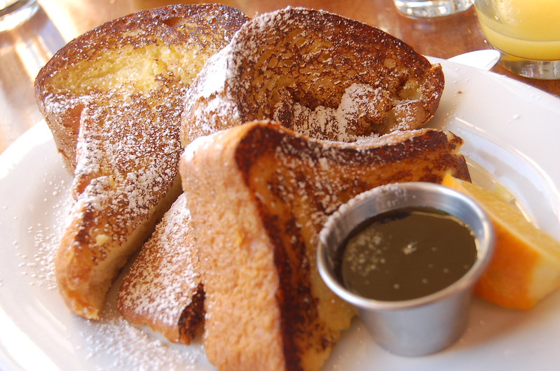

Home
French Toast

Photo by snowpea&bokchoi on Flickr
Description
If you're looking for the best French toast recipe on the internet, you've come to the right place. This tender, fluffy, and indulgent recipe comes together quickly and easily with just five ingredients you already have on hand.
Ingredients
- White Bread: Thick-cut bread is the base for all French toast. Sturdy, dense, slightly stale slices absorb the custard-like egg mixture better than thin, airy ones.
- Eggs: When it comes to French toast, eggs are essential. The proteins solidify once they're heated, which binds the batter together and ensures a rich texture. The fat, meanwhile, adds extra creaminess.
- Milk: You can technically use any liquid to make French toast, though milk is most popular. Not only does milk add the necessary moisture, but the fat gives the batter extra richness. This recipe calls for whole milk because it creates the ideal texture. You can easily substitute half-and-half, cream, or your favorite alternative milk – full-fat varieties will produce the creamiest consistency.
- Vanilla and cinnamon: The best French toast is warm, cozy, aromatic, and sweet. The cinnamon and vanilla in this recipe are optional, but we definitely recommend using them for the most delicious experience. You could even add a little nutmeg or sugar if you feel like it.
- Salt: Don't skip the salt! Just a pinch won't affect the flavor. Salt helps break down the eggs, incorporate them into the batter, and prevents egg chunks in the finished product.
- Butter: Like so many of the most decadent foods, the best French toast is made with butter. If your French toast has the tendency to burn, try frying the batter-soaked bread in a combination of butter and oil.
Steps
- Gather all ingredients.
- Whisk milk, eggs, vanilla, cinnamon, and salt together in a shallow bowl until combined and smooth.
- Lightly butter a griddle or skillet and heat over medium-high heat. Soak each slice of bread in egg mixture, about 5 to 10 seconds per side, allowing it to absorb the mixture without becoming soggy.
- Transfer to the hot skillet and cook until golden brown and slightly crisp, 3 to 4 minutes per side.
- Serve hot and enjoy with butter and syrup.